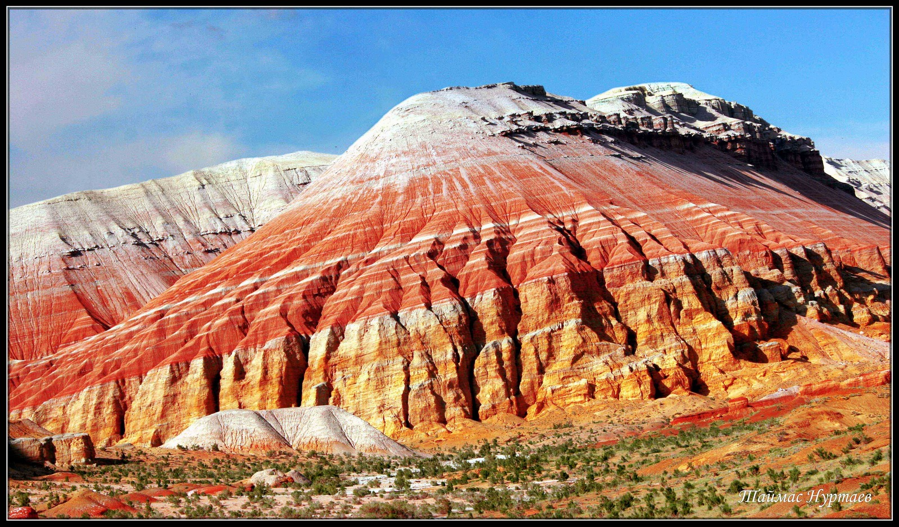

Step into a world of surreal landscapes, from the famous “singing” sand dunes to the painted Aktau and Katutau mountains.
About Altyn-Emel
Altyn-Emel National Park, located northeast of Almaty, covers over 4,600 km²
of protected land. It is home to the mystical Singing Dune that resonates with
deep sounds when the wind blows, the colorful Aktau mountains formed by ancient
sediments, and rare wildlife including kulan (wild donkeys) and gazelles.
The park is also rich in archaeological sites, petroglyphs, and legends from
Kazakhstan’s nomadic history.

Itinerary
(1-Day Trip)
- Day 1 Morning: Departure from Almaty (3.5–4 hours by bus).
- Day 1 Afternoon: Visit Singing Dune and enjoy a picnic lunch.
- Day 1 Evening: Overnight stay in eco-camp or guesthouse near the park.
- Day 2 Morning: Explore Aktau and Katutau mountains.
- Day 2 Afternoon: Visit ancient petroglyphs and enjoy wildlife watching.
- Evening: Return to Almaty.
Optional: 2-day program with overnight stay in eco-camp or guesthouse.